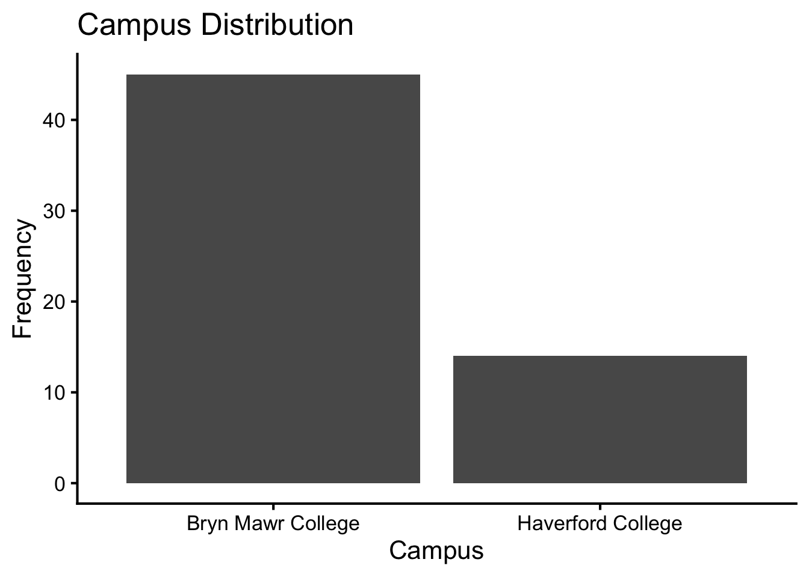
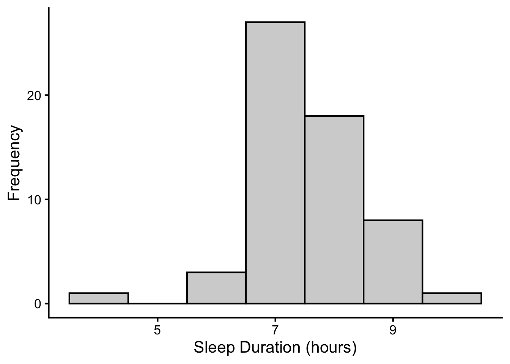
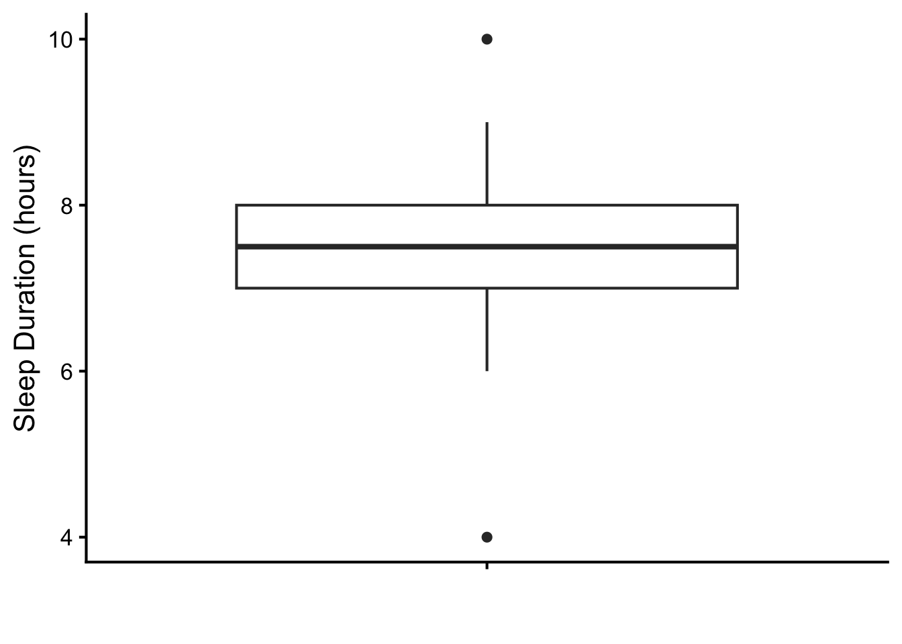
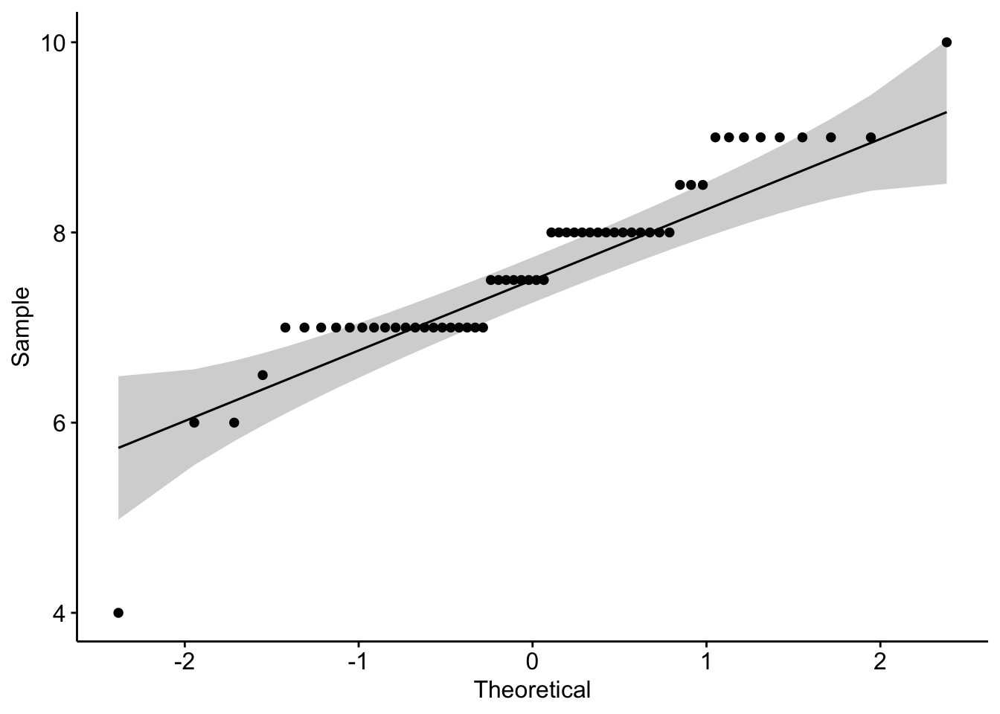
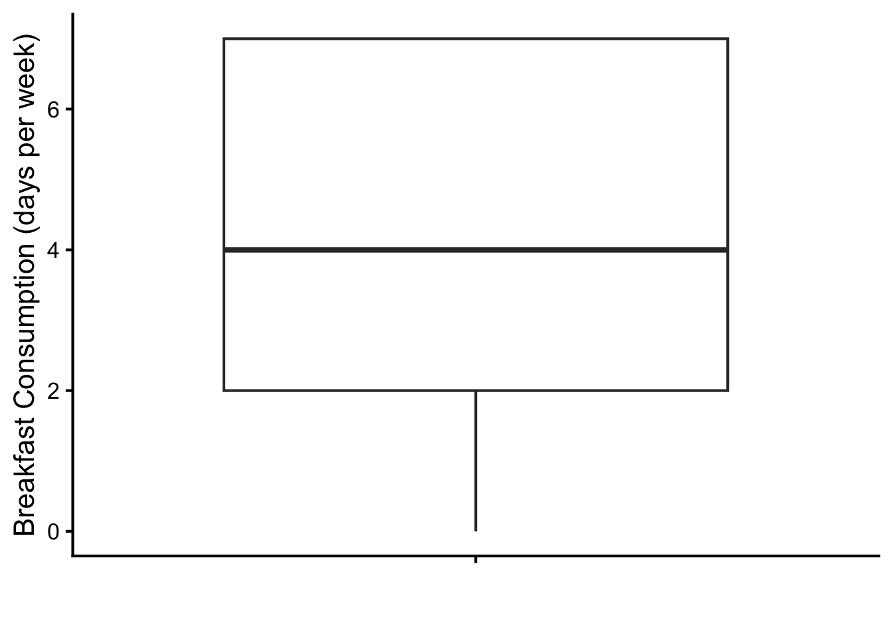
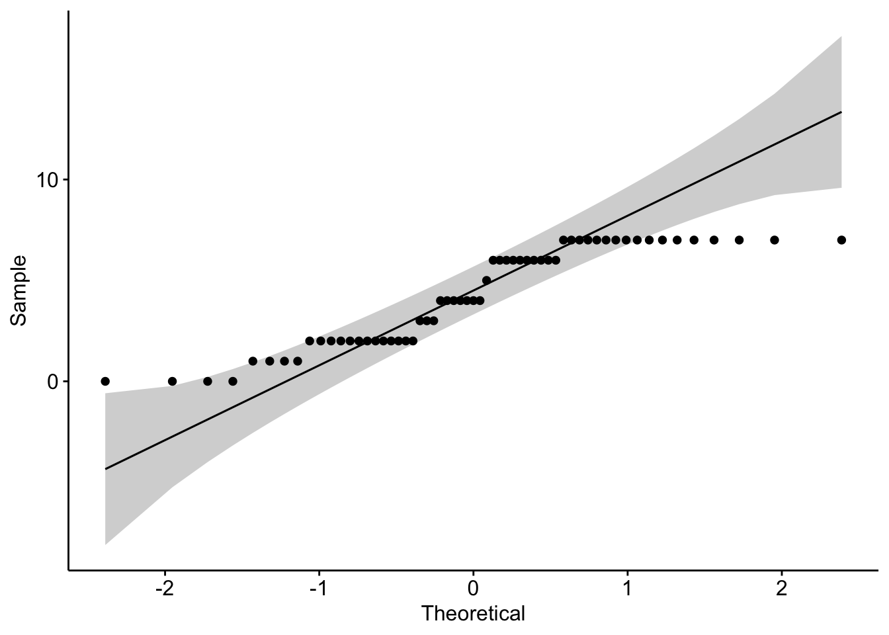
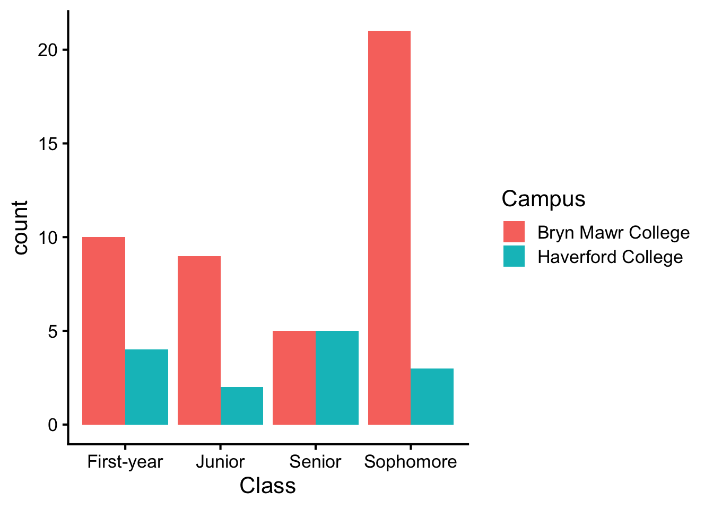
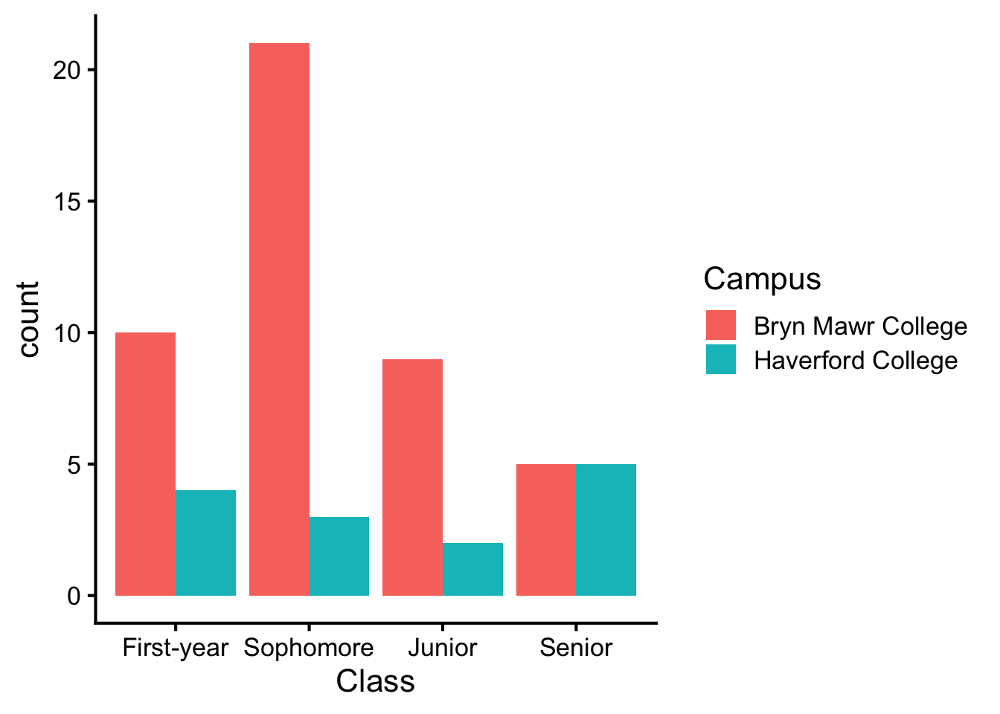
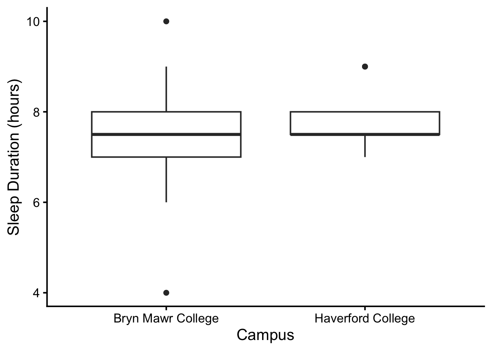
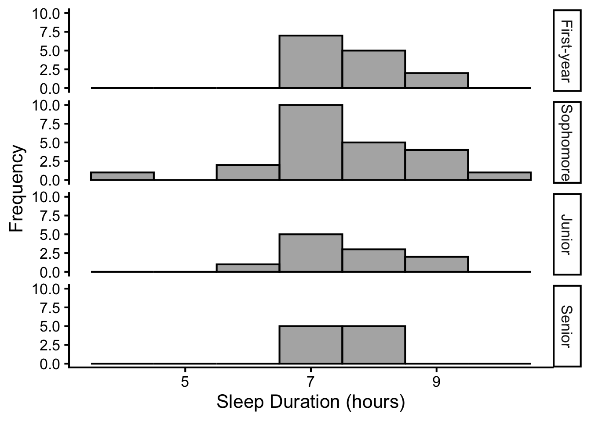

library(tidyverse) # for data wrangling and visualization
library(psych) # for describe() and scoreItems()
library(broom) # for tidying model output
library(janitor) # for frequency and contingency tables
library(gt) # for pretty tables
library(ggpubr) # for ggqqplot()Lab 3: Exploratory Data Analysis (EDA)
This lab will orient you to the very first steps of data analysis. When you get a new dataset, it is important to take a quick look at the data before proceeding with any analysis and answer your research questions. This is called exploratory data analysis (EDA). EDA is a critical step in the data analysis process because it allows you to understand the structure of the data, identify any potential issues, and get a sense of the state of each variable. To conduct EDA, you will inspect if the raw data look right (no missing data, appropriate range of responses, etc.), and visualize the data to understand the shape of the distributions along with descriptive statistics.
You will work with survey data on sleep and breakfast consumption. We asked 59 Bi-Co students about how much sleep they get on average and how many days a week they eat breakfast, along with their demographic information on class year and home campus.
| Variable | Description | Levels |
|---|---|---|
| SleepDuration | “On average, how many hours of sleep do you get in a 24-hour period?” | 0-24 (hours) |
| BreakfastPerWeek | “How many days a week do you eat breakfast??” | 0-7 (days) |
| Class | Class year | First-year, Sophomore, Junior, Senior |
| Campus | Home campus | Bryn Mawr College, Haverford College |
What kind of questions would you want to answer about this dataset? Before reading onto the answer, pause here to think about what you would want to know about this dataset.
TipExample Questions about the Dataset
- Demographics:
- How many Bryn Mawr College and Haverford College students participated in the survey?
- How many students from each class year participated in the survey?
- Single-Variable Questions:
- Sleep:
- What is the average sleep duration of the students?
- What is the spread of sleep duration among the students?
- Breakfast:
- What is the average number of days per week that students eat breakfast?
- What is the spread of breakfast consumption among the students?
- Sleep:
- Association Question:
- Relationship between sleep and breakfast consumption:
- Is there a relationship between sleep duration and breakfast consumption?
- Relationship between sleep and class year:
- Is there a relationship between sleep duration and class year?
- Relationship between sleep and campus:
- Is there a relationship between sleep duration and campus?
- Relationship between sleep and breakfast consumption:
With these questions in mind, let’s start exploring the data.
Learning Objectives
- Understand the role of the exploratory data analysis (EDA) step in the data analysis process.
- Conduct univariate and multivariate EDA depending on the type of variables.
- Summarize data using descriptive statistics.
1 Preliminaries
Load the necessary packages for this lab.
2 Data
Load the data and use glimpse() function to inspect the structure of the dataset.
TipQuestions to answer about the data:
- Are all variables in the dataset?
- How many observations are in the dataset? Does it match the number of participants in the survey?
df <- read_csv('data/sleep_breakfast.csv') %>%
as_tibble()
glimpse(df)Rows: 59
Columns: 4
$ SleepDuration <dbl> 7.5, 8.5, 7.0, 7.5, 6.0, 8.0, 9.0, 8.0, 8.0, 7.0, 7.5…
$ BreakfastPerWeek <dbl> 7, 2, 4, 7, 4, 6, 7, 2, 7, 6, 7, 1, 2, 7, 2, 6, 7, 2,…
$ Class <chr> "First-year", "Junior", "Sophomore", "First-year", "S…
$ Campus <chr> "Bryn Mawr College", "Bryn Mawr College", "Bryn Mawr …3 Univariate Analysis
Univariate analysis involves examining the distribution of each variable one at a time. With this, we are asking single-variable questions: what is the state of each variable? The answer to this question includes the typical response (central tendency) and how much variability there is in the responses (spread), and the shape of the distribution.
How we conduct univariate analysis depends on the type of variable. Table 1 shows different approaches to univariate analysis depending on the type of variable.
| Type of Variable | Approach to Univariate Analysis |
|---|---|
| Categorical, Ordinal | Frequency table, bar chart |
| Interval, Ratio | Histogram, box plot, descriptive statistics |
In our dataset, we have one categorical variable (Campus), one ordinal variable (Class), and two ratio variables (SleepDuration, BreakfastPerWeek). We will conduct univariate analysis for each of these variables in the following sections.
3.1 Categorical Variable: Campus
3.1.1 Data Wrangling
The correct data type is important for conducting univariate analysis. The data type of the Campus variables should be factor, which has specific levels that represent the categories of the variable. The following code converts the Campus variables to factor data type, with two levels: “Bryn Mawr College” and “Haverford College”.
First, make sure that the values of the Campus variable are spelled correctly and match the expected categories. You can use unique() function to check the unique values of the Campus variable.
unique(df$Campus)[1] "Bryn Mawr College" "Haverford College"If this looks right, you can convert the Campus variable to factor data type using mutate() and factor() functions. The levels argument specifies the levels of the factor, and the ordered argument specifies whether the levels are ordered or not. In this case, we set ordered = FALSE because there is no inherent order to the categories of the Campus variable.
You can check if the data type of the Campus variable is factor and what the levels of the factor are using class() and unique() functions, respectively.
df <- df %>%
mutate(
Campus = factor(Campus,
levels = c("Bryn Mawr College",
"Haverford College"),
ordered = FALSE),
)
class(df$Campus)[1] "factor"unique(df$Campus)[1] Bryn Mawr College Haverford College
Levels: Bryn Mawr College Haverford College
TipData Wrangling Checklist
- Are the data types of the variables correct?
- Do the levels of the factors match the expected categories?
3.1.2 Frequency Table
Frequency tables are a simple way to summarize categorical or ordinal variables. They show the number of observations and the percentage of observations in each category.
TipQuestions to answer about the data:
- Any missing data? If so, how many observations are missing?
- Which level is the most common (called mode)? Which level is the least common?
tabyl() function from the janitor package creates a frequency table. We can also add the total sample size using adorn_totals() and choose how many decimal places to display using adorn_pct_formatting(). Finally, we use gt() function to create a pretty table. Running the code below will open a new window in your browser to display the frequency table.
tbl.campus <- df %>%
tabyl(Campus) %>%
adorn_totals("row") %>%
adorn_pct_formatting(digits = 2) %>%
gt() %>%
cols_align(align = "left", columns = Campus)
tbl.campus| Campus | n | percent |
|---|---|---|
| Bryn Mawr College | 45 | 76.27% |
| Haverford College | 14 | 23.73% |
| Total | 59 | 100.00% |
TipFrequency Table Checklist
- Are all categories represented in the frequency table?
- Is the total number of observations in the frequency table equal to the total number of observations in the dataset?
3.1.3 Bar Chart
For categorical and ordinal variables, bar charts are a good way to visualize the distribution of the variable. Bar chart has the same information as the frequency table, but it is easier to spot the most common response and the distribution of the responses.
TipQuestions to answer about the data:
- Which level is the most common (called mode)? Which level is the least common?
The following code using geom_bar() of ggplot() creates a bar chart for the Campus variable.
fig.campus <- df %>%
ggplot(aes(x = Campus)) +
geom_bar(stat = "count") +
labs(x = "Campus", y = "Frequency")
fig.campus
TipBar Chart Checklist
- Are axes labeled correctly, where x-axis shows the levels of the variable and y-axis shows the frequency of each level?
- Is the order of the levels informative (e.g., alphabetical order, or order of importance)?
3.2 Ordinal Variable: Class
For the Campus variable, it doesn’t matter whether the level looks like c("Bryn Mawr College", "Haverford College") or c("Haverford College", "Bryn Mawr College"), because there is no inherent order to the categories. However, for the Class variable, the order of the levels matters because it is an ordinal variable. The following code converts the Class variable as factor, with four levels: “First-year”, “Sophomore”, “Junior”, and “Senior”. The order of the levels is important because it reflects the natural order of the class years. You can achieve this by setting the ordered argument to TRUE in the factor() function.
Other than this, all the steps for univariate analysis of the Class variable are the same as those for the Campus variable. You can create a frequency table and a bar chart for the Class variable using the same approach as for the Campus variable.
TipExercise 1: Ordinal data
- Convert the variable as factor with the correct order of levels.
- Create a frequency table.
- Create a bar chart.
- Summarize your findings in a few sentences, addressing the following questions:
- Any missing data? If so, how many observations are missing?
- Which level is the most common (called mode)? Which level is the least common?
TipExercise 1 Checklist
- Are the levels of the
Classvariable in the correct order? - Are all categories represented in the frequency table?
- Are axes labeled correctly in the bar chart?
- Are categories ordered correctly in the frequency table and the bar chart?
3.3 Ratio Variable: SleepDuration
SleepDuration is a ratio variable, which means it has a true zero point (e.g., 0 hour means you don’t get any sleep), and the intervals between values are meaningful. Another name for interval and ratio variables is continuous variables. For continuous variables, we can summarize the data using descriptive statistics: the central tendency (mean, median) and spread of the variable (standard deviation and range) and the shape of the distribution (skew and kurtosis). Mean and standard deviation are the most commonly used descriptive statistics, especially when the distribution of the variable is approximately normal. This makes it important for us to check if the responses are normally distributed.
We can do this by first visualizing the distribution of the variable using histograms and box plots, and run statistical tests to check for normality.
3.3.1 Descriptive Statistics
Descriptive statistics are a set of summary statistics that describe the central tendency, spread, and shape of the distribution of a variable. For instance, for sleep duration, we can summarize how much sleep Bi-Co students are getting on average, and how much variability there is in the amount of sleep they are getting.
TipQuestions to answer about the data:
- Are there any missing values in the variable? If so, how many observations are missing?
- What is the central tendency of the variable?
- What is the spread of the variable?
- What is the shape of the distribution of the variable?
- Is the distribution approximately normal (bell-shaped, symmetric around one peak)? If not, which direction is the distribution skewed (positive or negative)?
The describe() function from the psych package provides a convenient way to calculate descriptive statistics for interval and ratio variables. The following code calculates descriptive statistics for the SleepDuration variable. We are specifically interested the two central tendency measures (mean and median), two spread measures (standard deviation sd and range), minimum min and maximum max values, and two shape measures (skew and kurtosis).
df %>% select(SleepDuration) %>%
describe() %>%
select(n, mean, median, sd, range, min, max, skew, kurtosis) %>%
gt(rownames_to_stub=TRUE)| n | mean | median | sd | range | min | max | skew | kurtosis | |
|---|---|---|---|---|---|---|---|---|---|
| SleepDuration | 58 | 7.637931 | 7.5 | 0.9587689 | 6 | 4 | 10 | -0.5347194 | 2.202083 |
TipDescriptive Statistics Checklist
- Are the min and max values reasonable? For example, min value of sleep duration should not be negative, and max value should not be greater than 24 hours.
3.3.2 Histogram
As we did with the bar chart for categorical and ordinal variables, we can use a histogram to visualize the distribution of interval and ratio variables. The histogram makes the answers to our questions about the shape of the distribution more apparent.
TipQuestions to answer about the data:
- What is the shape of the distribution of the variable?
- Is the distribution approximately normal (bell-shaped, symmetric around one peak)? If not, which direction is the distribution skewed (positive or negative)?
The following code creates a histogram for the SleepDuration variable using geom_histogram() function of ggplot(). The binwidth argument specifies the width of the bins in the histogram. In this case, we set the binwidth to 1 hour, which means that each bin will represent 1 hour of sleep duration.
df %>% ggplot(aes(x = SleepDuration)) +
geom_histogram(binwidth = 1, color = "black", fill = "lightgray") +
labs(x = "Sleep Duration (hours)", y = "Frequency")
Inspect the histogram and notice whether the distribution approximately normal (bell-shaped). Here, you see that the distribution is not symmetric, and it is skewed to the left (negative skew). This means that there are students who are getting extremely low amounts of sleep. In this case, the median is a better measure of central tendency than the mean, because the mean is affected by extreme values.
TipHistogram Checklist
- Are the axes labeled correctly?
- Is the binwidth appropriate for the variable? If not, adjust the binwidth and recreate the histogram.
3.3.3 Box plot
Box plots convey rich information about the distribution of a variable. It shows the central tendency and the spread of the distribution, as well as the presence of outliers.
TipQuestions to answer about the data:
- What is the median sleep duration of the students?
- What is the range that the middle 50% of the students fall into (interquartile range)?
- What is the range of sleep duration among the students (excluding outliers)?
- How many outliers are present in the box plot?
- Is the distribution approximately normal and symmetric around the median? If not, which direction is the distribution skewed (positive or negative)?
Let’s first make a box plot for the SleepDuration variable. We can use geom_boxplot() function of ggplot() to create a box plot. The following code creates a box plot for the SleepDuration variable.
df %>% ggplot() +
geom_boxplot(aes(x="",
y=SleepDuration)) +
labs(y = "Sleep Duration (hours)",
x = "")
The center-line in the middle of the box shows the median of the distribution. The upper edge of the box is the third quartile (Q3; 75% of the cases fall at or below this value); the lower edge is the first quartile (Q1; 25% of the cases fall at or below this value), which makes the box to represent the middle 50% of the data. If the distribution is skewed, the distance between the center line and the upper versus lower edge of the box will not be the same. When there are no outliers, the whiskers (the line) extend to the lowest and the highest score in the distribution. Outliers are plotted as separate points. If one whisker is long relative to the other or if there are outliers on only one side of the distribution, the distribution will be skewed in that direction (positive skew for outliers above Q3; negative skew for outliers below Q1). These outliers are values that fall outside of 1.5 times the interquartile range (IQR) from the first and third quartiles. For example, if the IQR is 1 hour (i.e., the range of the middle 50% of the students sleep is 1 hour), then any values that are more than 1.5 hours below Q1 or above Q3 will be considered outliers. Table 2 shows the components of a box plot and their descriptions.
| Component | Description |
|---|---|
| Center line | Median |
| Edges of the box | Interquartile range (IQR) |
| Whiskers extending from the box | Range excluding the outliers |
| Points outside of the whiskers | Outliers |
3.3.4 Checking Normality: Statistical Tests
There are formal statistical tests to check for normality for continuous variables. The two most commonly used tests are the Kolmogorov-Smirnov test and the Shapiro-Wilk test. Generally, you would use Kolmogorov-Smirnov test for samples greater than 50 and Shapiro-Wilk is used with samples smaller than or equal to 50.
However, there are a couple of considerations for using these formal tests. They are meant for continuous variables, which can theoretically take on any values within a range. However, our sleep duration variable is rounded to the nearest half hour, and there are many “ties” in the data (e.g., many students reported sleeping exactly 7 hours, although the true sleep duration may be something like 7 hours and 6 minutes or 6 hours and 47 minutes). This can affect the results of the normality test, and it is important to keep this in mind when interpreting the results.
Although we have 59 students in our sample, we will use Shapiro-Wilk test because it handles ties better than Kolmogorov-Smirnov test. The following code runs the Shapiro-Wilk test for the SleepDuration variable. The null hypothesis of the Shapiro-Wilk test is that the data are normally distributed. If the p-value is less than 0.05, we reject the null hypothesis and conclude that the data are not normally distributed. If the p-value is greater than 0.05, we conclude that the data are normally distributed.
TipQuestions to answer about the data:
- Based on the Shapiro-Wilk test, is the distribution significantly deviates from a normal distribution and NOT normally distributed (p < 0.05)?
shapiro.test(df$SleepDuration) %>%
tidy() %>%
mutate(across(c("statistic"), round, 3)) %>%
gt()| statistic | p.value | method |
|---|---|---|
| 0.906 | 0.0002766586 | Shapiro-Wilk normality test |
3.3.5 Checking Normality: Q-Q Plot
A Q-Q plot (a quantile-quantile plot) is a graphical method for comparing two probability distributions by plotting their quantiles against each other. The x-axis represents the theoretical quantiles of a normal distribution, and the y-axis represents the sample quantiles of the variable. If the points in the Q-Q plot fall on a straight diagonal line, it indicates that the data are normally distributed. If the points deviate from the straight diagonal line, it indicates that the data are not normally distributed. The further the points deviate from the line, the more the data deviates from a normal distribution.
TipQuestions to answer about the data:
- Based on the Q-Q plot, is the distribution normally distributed (most points fall on the straight diagonal line)?
ggqqplot() function from the ggpubr package creates a Q-Q plot. You will need to specify the variable you want to check for normality using the x argument. The following code creates a Q-Q plot for the SleepDuration variable.
df %>%
ggqqplot(x = "SleepDuration")
Now we can compare the distribution of the SleepDuration variable to a theoretical normal distribution. First, you may notice that there is one dot that is far away from the straight diagonal line, which indicates that there is an outlier in the data. Second, you can see that the points are clustered, where many points take the same value on the sample (y-axis), forming a staircase pattern. This is due to rounding, and what you need to pay attention to is whether those clusters fall on the straight diagonal line. If they do, it indicates that the distribution is approximately normal, even though the individual dots are not on the line.
3.4 Ratio Variable: BreakfastPerWeek
Repeat the same steps for the BreakfastPerWeek variable.
TipExercise 2: Ratio data
- Check descriptive statistics.
- Create a histogram.
- Create a box plot.
- Run the Shapiro-Wilk test.
- Create a Q-Q plot.
- Summarize your findings in a few sentences, addressing the following questions:
- Are there any missing values in the variable? If so, how many observations are missing?
- What is the shape of the distribution of the variable?
- Is the distribution approximately normal (bell-shaped, symmetric around one peak)?
- If the distribution is skewed, which direction is the distribution skewed (positive or negative)?
- What is the central tendency of the variable?
- What is the spread of the variable?
df %>% select(BreakfastPerWeek) %>%
describe() %>%
select(n, mean, median, sd, range, min, max, skew, kurtosis) %>%
gt(rownames_to_stub=TRUE)| n | mean | median | sd | range | min | max | skew | kurtosis | |
|---|---|---|---|---|---|---|---|---|---|
| BreakfastPerWeek | 59 | 4.254237 | 4 | 2.439568 | 7 | 0 | 7 | -0.2279263 | -1.4872 |
df %>% ggplot(aes(x = BreakfastPerWeek)) +
geom_histogram(binwidth = 1, color = "black", fill = "lightgray") +
labs(x = "Breakfast Consumption (days per week)", y = "Frequency")
df %>% ggplot() +
geom_boxplot(aes(x="",
y=BreakfastPerWeek)) +
labs(y = "Breakfast Consumption (days per week)",
x = "") 
library(papaja)
shapiro.test(df$BreakfastPerWeek) %>%
tidy() %>%
gt()| statistic | p.value | method |
|---|---|---|
| 0.8623552 | 8.360934e-06 | Shapiro-Wilk normality test |
df %>%
ggqqplot(x = "BreakfastPerWeek")
4 Multivariate Analysis
Multivariate analysis involves examining the relationship between two or more variables. The type of analysis we conduct depends on the type of variables we are examining. Table Table 3 shows different approaches to multivariate analysis depending on the type of variables.
| Relationship | Approach to Multivariate Analysis |
|---|---|
| Between two categorical/ ordinal | Contingency table, grouped bar chart split by category |
| Between continuous and categorical/ordinal | Histogram or box plot split by category, descriptives by category |
| Between continuous and ordinal | Line graph |
| Between two continuous | Scatterplot |
4.1 Between two categorical/ordinal variables: Campus and Class
Is the distribution of class year different between Bryn Mawr College and Haverford College students? To answer this question, we can create a contingency table and a grouped bar chart split by category.
For both contingency tables and grouped bar charts, we are asking whether there is a relationship between two categorical/ordinal variables. If there is no relationship between the two variables, we would expect the distribution of one variable to be the same across the levels of the other variable. If there is a relationship between the two variables, we would expect the distribution of one variable to be different across the levels of the other variable.
TipQuestions to answer about the data:
- Is there a relationship between the two variables (e.g., is the distribution of class year different between Bryn Mawr College and Haverford College students)?
4.1.1 Contingency Table
A contingency table is a two-way frequency table that shows the combinations of the levels of two variable. This can be done using the same tabyl() function as before, just with both variables.
tbl.campus_class <- df %>%
tabyl(Campus, Class) %>%
adorn_totals(c("row", "col")) %>%
gt() %>%
cols_align(align = "left", columns = c(Campus))
tbl.campus_class| Campus | First-year | Junior | Senior | Sophomore | Total |
|---|---|---|---|---|---|
| Bryn Mawr College | 10 | 9 | 5 | 21 | 45 |
| Haverford College | 4 | 2 | 5 | 3 | 14 |
| Total | 14 | 11 | 10 | 24 | 59 |
4.1.2 Grouped Bar Chart
We can use the color of the bars to represent the levels of the new variable. In this example, it makes more sense to use the Campus variable as the fill color, because there are only two levels of the Campus variable, and it is easier to distinguish between two colors than four colors. Plus, the Class variable is ordinal, and it is easier to see the order of the levels when they are on the x-axis.
The following code creates a grouped bar chart for the Class variable split by the Campus variable.
fig.campus_class <- df %>%
ggplot() +
geom_bar(aes(x = Class, fill = Campus), position = "dodge")
fig.campus_class
TipGrouped Bar Chart Checklist
- Are axes labeled correctly?
- Does the chart show the levels of one variable on the x-axis and the levels of the other variable as the fill color?
- Is the order of x-axis levels informative (e.g., ordinal variable)?
4.2 Between continuous and categorical/ordinal variables: SleepDuration and Campus
Now we will examine the relationship between a continuous variable and a categorical/ordinal variable. In this case, we will examine the relationship between SleepDuration (continuous) and Campus (categorical). Later in the semester we will learn how to conduct statistical tests to determine whether there is a significant difference between the groups (here, Campus), but for now, we will just visualize the data using histograms and box plots split by category.
TipQuestions to answer about the data:
- Is there a relationship between the two variables (e.g., is the distribution of sleep duration different between Bryn Mawr College and Haverford College students)?
4.2.1 Histogram
You can use facet_grid() in ggplot() to split panels for each level of the cateorical/ordinal variable. Here, we will split the histogram of SleepDuration by Campus. The x-axis is shared between the panels using Campus ~ ., which makes the comparison between the two distributions easier.
df %>%
ggplot(aes(x = SleepDuration)) +
facet_grid(Campus ~ .) +
geom_histogram(binwidth = 1, color = "black", alpha = 0.5, position = "identity") +
labs(x = "Sleep Duration (hours)", y = "Frequency")
4.2.2 Box plot
To compare the distributions of SleepDuration between the two campuses, we can use a box plot split by Campus. The x-axis will represent the Campus, while the y-axis will represent the SleepDuration. The following code creates a box plot for the SleepDuration variable split by the Campus variable.
df %>%
ggplot() +
geom_boxplot(aes(x = Campus, y = SleepDuration)) +
labs(x = "Campus", y = "Sleep Duration (hours)")
You can inspect these box plots and notice the skewness per each campus.
4.3 Between continuous and ordinal variables: SleepDuration and Class
Now you will examine whether there is a relationship between the amount of sleep students get and their class year.
TipExercise 3: Continuous and Ordinal data
- Create a faceted histogram.
- Create a box plot showing both variables.
- Summarize your findings in a few sentences, addressing the following questions:
- Is there a relationship between the two variables (e.g., is the distribution of sleep duration different between class years)?
- Which class year has the highest average sleep duration?
- Does the sleep distribution appear to be spread similarly across class years, or is there more variability in some class years than others?
4.4 Between two continuous variables: SleepDuration and BreakfastPerWeek
When both variables are continuous, we can visualize the relationship between the two variables using a scatterplot. A scatterplot shows the relationship between two continuous variables by plotting one variable on the x-axis and the other variable on the y-axis. Each point in the scatterplot represents an observation (e.g., a participant) in the dataset. The following code creates a scatterplot for the SleepDuration and BreakfastPerWeek variables.
TipQuestions to answer about the data:
- Is there a relationship between the two variables?
The simplest way to do this is using the scatterplot as we’ve done before.
df %>%
ggplot(aes(x = SleepDuration, y = BreakfastPerWeek)) +
geom_point() +
labs(x = "Sleep Duration (hours)", y = "Breakfast Consumption (days per week)")
However, for rounding issues, there are many overlaps of data in this case which makes it harder to see the relationship between the two. To address this, we can adjust the transparency of the points using the alpha argument in geom_point(), showing the density of the points. The more overlapping points, the darker the color of the point.
df %>%
ggplot(aes(x = SleepDuration, y = BreakfastPerWeek)) +
geom_point(alpha=0.2) +
labs(x = "Sleep Duration (hours)", y = "Breakfast Consumption (days per week)")
Inspect this scatterplot to see if there is a positive or negative association between the two variables.
Key Takeaways
- Visualizing data and the shape of the distribution is an important step in EDA.
- The types of variables inform how to conduct univariate and multivariate EDA (Table 1 and Table 3).
- If the distribution of a continuous variable is normal, mean and standard deviation are appropriate measures of central tendency and spread, respectively.
- If the distribution is not normal, mean and standard deviation are not appropriate measures of central tendency and spread. For this reason, it is important to check the normality of the distribution using visualizations (histogram, box plot, Q-Q plot) and statistical tests (Shapiro-Wilk test).
Wrapping up
- Discuss: What are some potential issues you found in the dataset? How would you address these issues in your analysis?
- Discuss: We saw that rounding and not having enough granularity in the continuous data present a challenge. In addition, the one-item measure may not accurately represents the construct. If you are designing the study to look at the relationship between sleep and breakfast consumption, how would you improve the study design to address these issues?